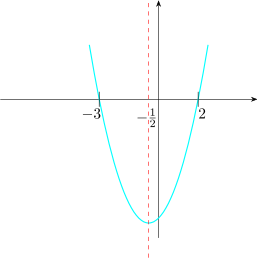

10.3 Quadratic Inequalities
A quadratic inequality can be solved either by graphs or by use of tables or analytically.
Solution.
- 1.
- By Graph
Let \(y=x^2+x-6\). The graph of this function is

\(x^2+x-6<0\implies y<0\)
Here we see that values of \(y\) are negative between \(-3\) and 2. Therefore the solution set is \[SS: \{x\in \mathbb {R}:-3<x<2\}\]
- 2.
- By Tables
Here we first find critical values. Critical values of \(x\) where the factors in the given expression are zeros. \(x^2+x-6=0\)
Now, \((x+3)(x-2)<0\)
critical values: \(x=-3\) and \(x=2\)
\((-5)\) \(-3\) 0 2 \((3)\) \(x+3\)\(-ve\) \(|\) \(+ve\) \(|\) \(+ve\) \(x-2\)\(-ve\) \(|\) \(-ve\) \(|\) \(+ve\) \((x+3)(x-2)\)\(+ve\) \(|\) \(-ve\) \(|\) \(+ve\) Thus \(x^2+x-6<0\) if \(-3<x<2\). Therefore the solution set is \(SS:(-3,2)\).
Solution.
- 1.
- By Table: First we find critical values.
Now \begin {align*} 2x-1 & < x^2-4\\ \implies 0 &< x^2-4-2x+1\\ \implies x^2-2x-3 &>0\\ \implies (x-3)(x+1)&>0 \end {align*}
Critical values \(x-3=0\implies x=3\) and \(x+1=0\implies x=-1\)
\((-2)\) \(-1\) 0 3 \((4)\) \((x-3)\) \(-ve\) \(|\) \(-ve\) \(|\) \(+ve\) \((x+1)\) \(-ve\) \(|\) \(+ve\) \(|\) \(+ve\) \((x-3)(x+1)\) \(+ve\) \(|\) \(-ve\) \(|\) \(+ve\) The product is positive in the interval \((-\infty ,-1)\) and \((3,\infty )\). Therefore \[SS:(-\infty ,-1)\cup (3,\infty )\]
- 2.
- Analytically
\((x-3)(x+1)>0\)
Since the product of two factors is positive then both factors must have the same sign.
case 1
\(x-3>0\) and \(x+1>0\)
\(\implies x>3\) and \(x>-1\)
\((3,\infty )\) and \((-1,\infty )\)
Thus we are looking for the intersection. i.e \((3,\infty )\cap (-1,\infty )=(3,\infty )\).
case 2
\(x-3<0\) and \(x+1<0\)
\(\implies x<3\) and \(x<-1\)
\(\implies (-\infty ,3)\cap (-\infty ,-1)=(-\infty ,-1)\)
Hence, \(SS:(-\infty ,-1)\cup (3,\infty )\)
Questions on this section
Stuck on something here? Ask below and it stays attached to this topic.